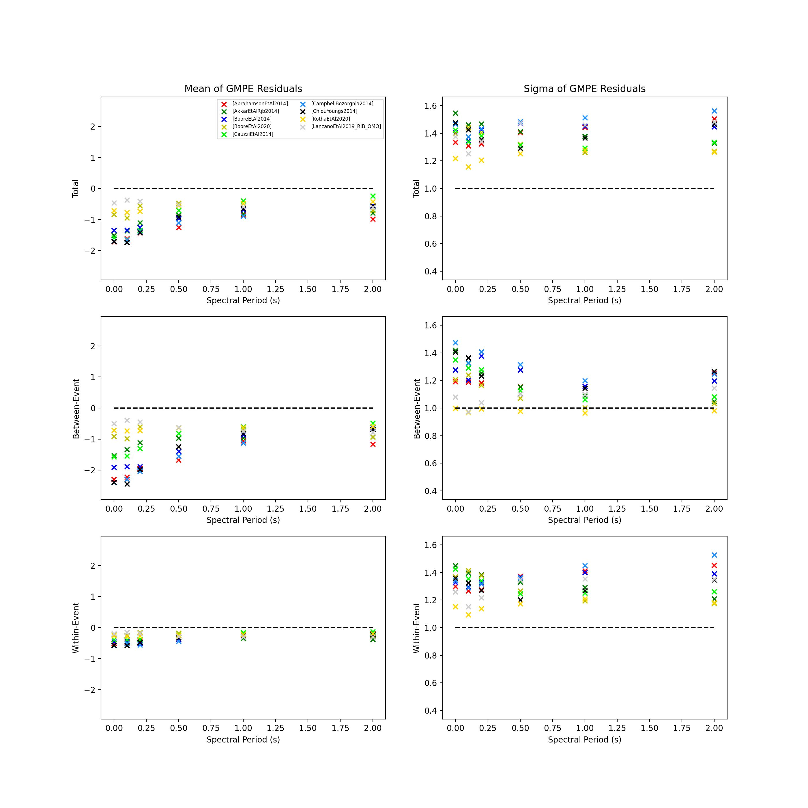
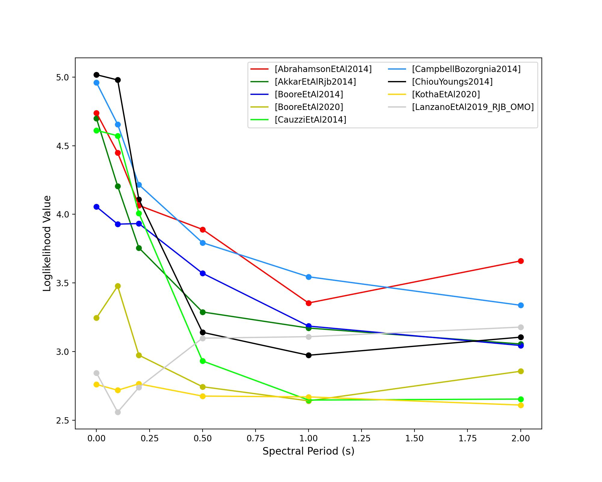
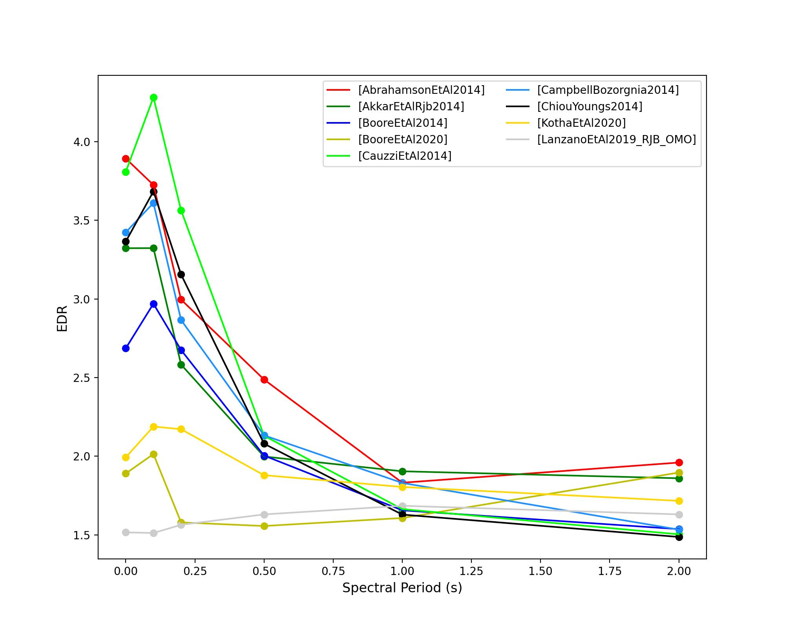
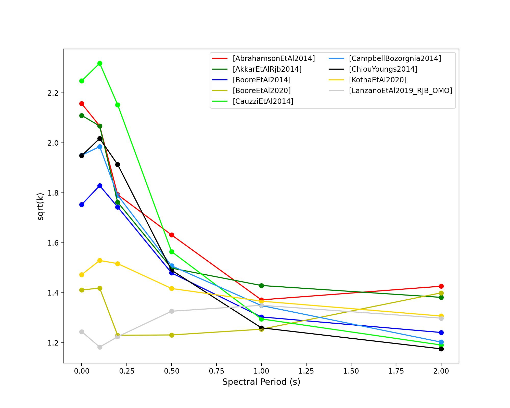
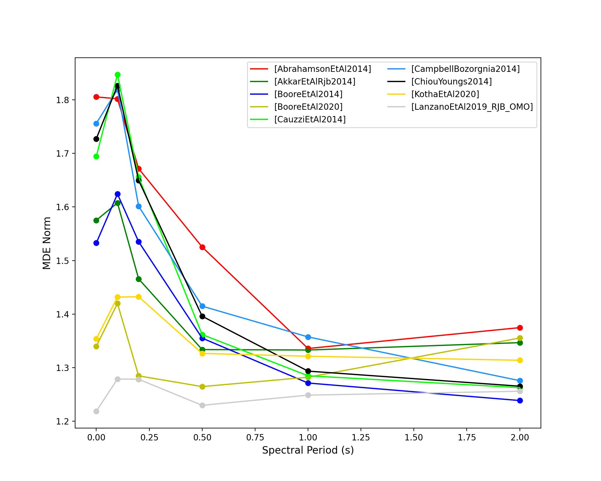
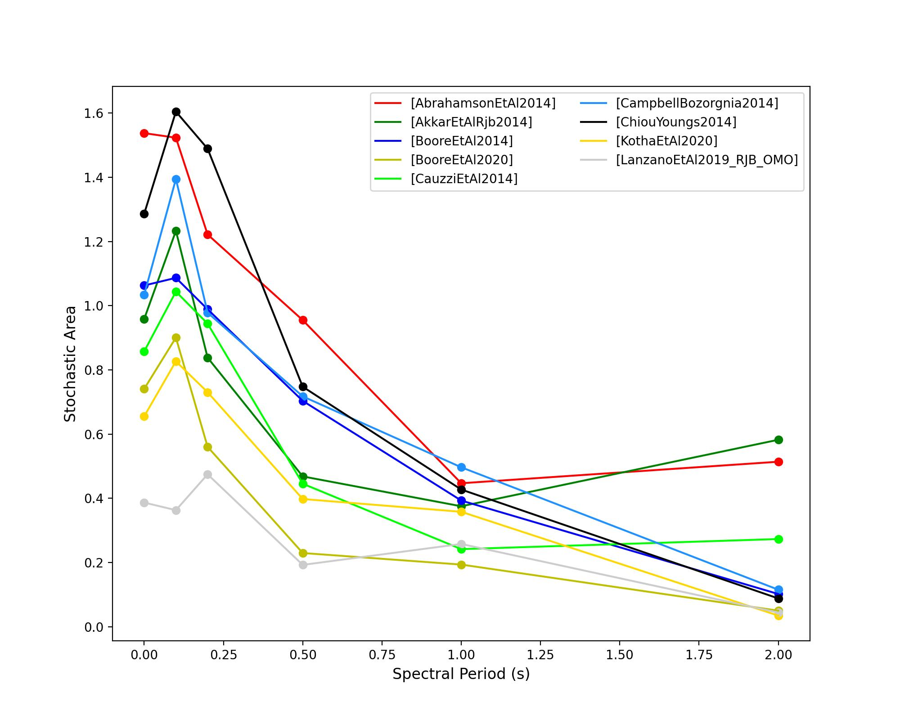
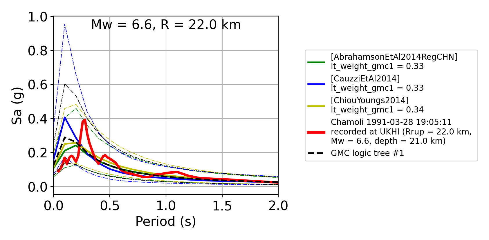
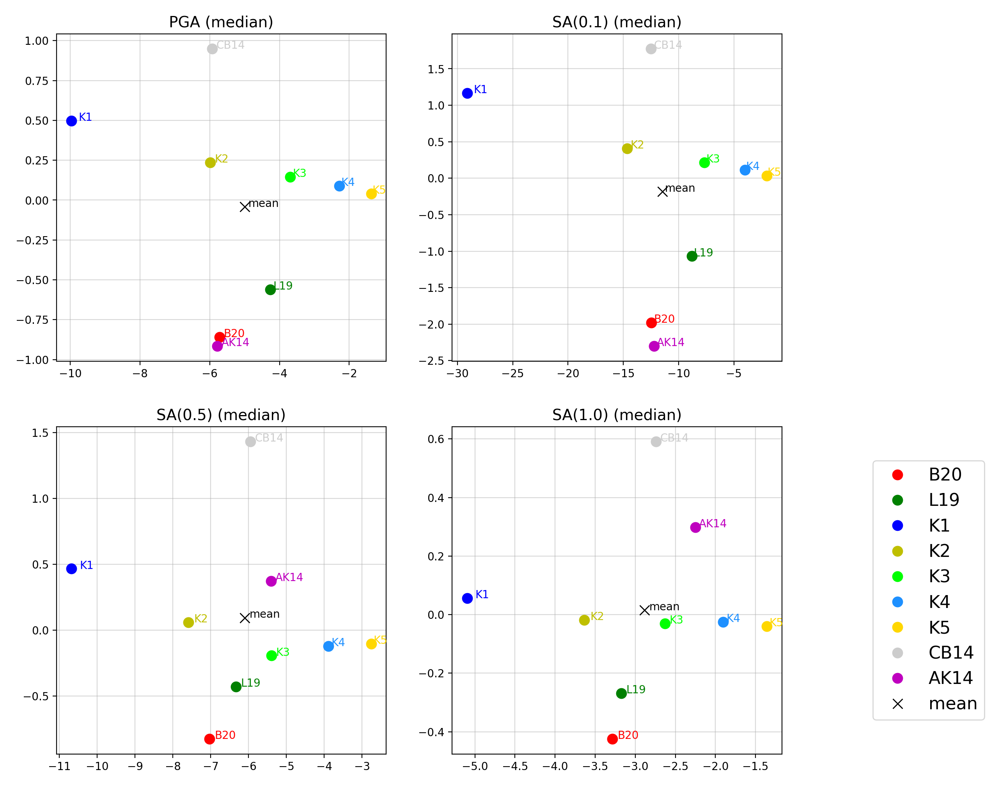
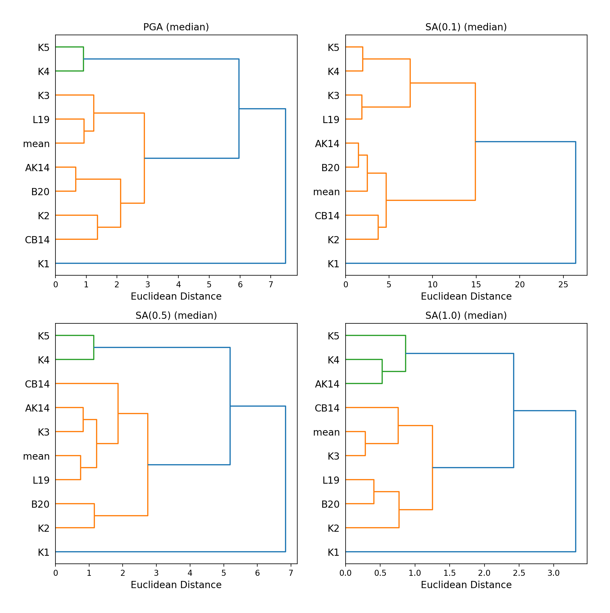
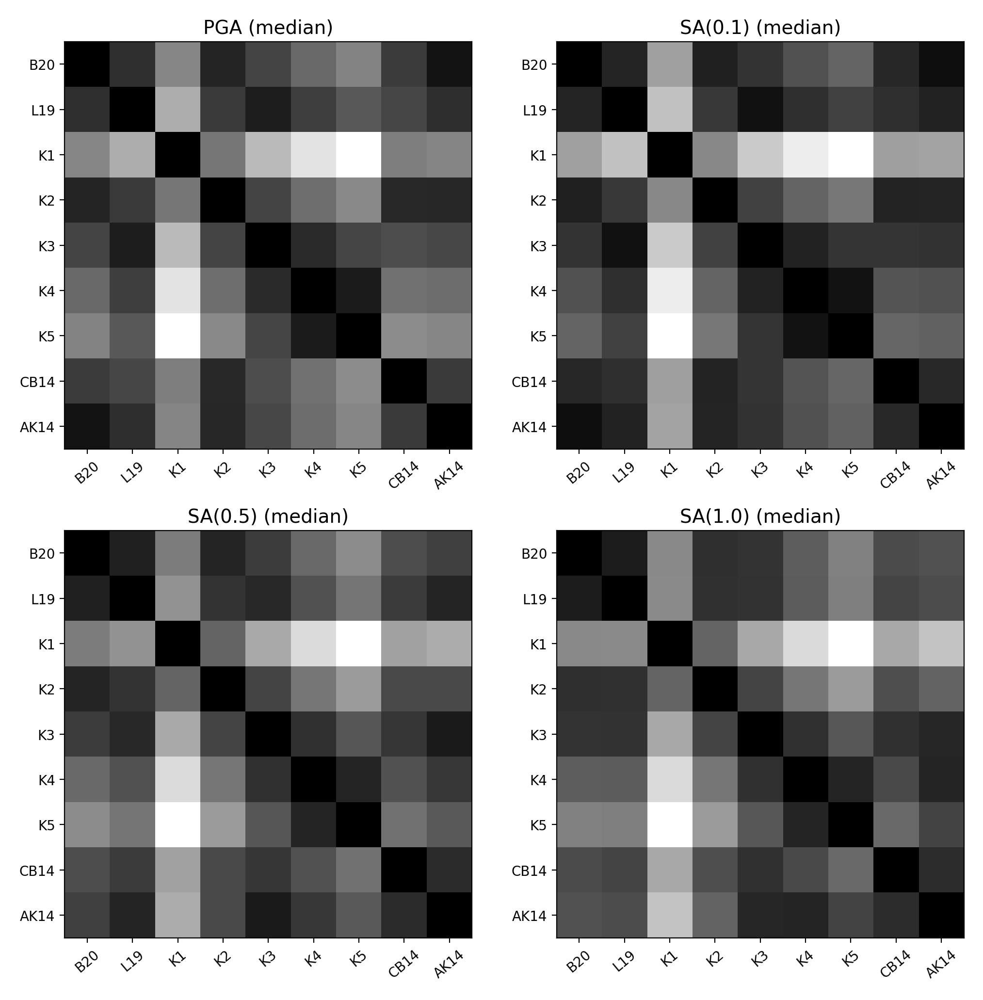

Strong-Motion Tools (smt) module
The Strong-Motion Tools module contains code for the selection of ground-motion prediction equations (GMPEs) and the subsequent development of a ground-motion characterisation (GMC).
The main components of the Strong-Motion Tools (smt) comprise of (1) parsing capabilities to generate metadata (2) capabilities for computation and plotting of ground-motion residual distributions (3) comparison of potentially viable GMPEs and (4) development of the GMC with the final selection(s) of GMPEs.
Here, we will demonstrate how each of these components can be implemented, in the context of aiming to develop a GMPE logic-tree approach GMC for Albania.
Please note that this documentation assumes an elementary knowledge of GMPEs, residual analysis and ground-motion characterisation. Therefore, this documentation’s purpose is to facilitate the application of the smt by user who is already familiar with the underlying theory. References are provided throughout for useful overviews of such theory.
Performing a Residual Analysis
The smt provides capabilities (parsers) for the parsing of an inputted dataset into metadata for the performing of a residual analysis, so as to evaluate GMPE performance against the inputted dataset.
The inputted dataset usually comprises of a ground-motion record flatfile. Many seismological institutions provide flatfiles of processed ground-motion records. These flatfiles often slightly differ in format, but generally follow a template of a .csv file in which each row represents a single ground-motion record, that is, a recording of the observed ground-motion at a single station. Each record contains information for (1) the associated earthquake (e.g. moment magnitude, hypocentral location, focal depth), (2) the associated site parameters (e.g. shear-wave velocity in the upper 30m of a site (Vs30)), (3) source-to-site distance metrics (e.g. epicentral distance, Joyner-Boore distance) and (4) ground-motion intensity values for various intensity measures (e.g. peak-ground acceleration (PGA), peak-ground velocity (PGV), spectral acceleration (SA) for various spectral ordinates).
Within a residual analysis, the information provided in each ground-motion record is used to evaluate how closely a selection of GMPEs predict the expected (observed) ground-motion. The ground-motion records within a flatfile will usually comprise of earthquakes from the same region and of the same tectonic region type. Parsers are provided in the smt for the most widely used flatfile formats (e.g. ESM, NGAWest2).
In this example, we will consider the ESM 2018 format parser for the parsing of a ESM 2018 flatfile comprising of earthquakes from Albania and the surrounding regions. We will then evaluate appropriate GMPEs using the parsed metadata in the explanations of the subsequent smt components.
Parsing a Ground-Motion Flatfile into Metadata
Herein we provide a brief description of the various steps for the parsing of an ESM 2018 flatfile. Note that we use the symbol > as the prompt in a terminal, hence every time you find some code starting with this symbol this indicate a command you must type in your terminal.
Following the geographical filtering of the ESM 2018 flatfile for only earthquakes from Albania and the surrounding regions in this example, we can parse the flatfile using the ESM_flatfile_parser. The currently available parsers within the smt module can be found in oq-mbtk.openquake.smt.residuals.parsers.
First we must import the
ESMFlatfileParserand the required python modules for managing the output directories:> # Import required python modules > import os > import shutil > from openquake.smt.residuals.parsers.esm_flatfile_parser import ESMFlatfileParser
Next we need to specify the base path, the flatfile location and the output location:
> # Specify base path > DATA = os.path.abspath('') > > # Specify flatfile location > flatfile_directory = os.path.join(DATA, 'demo_flatfile.csv') > > # Specify metadata output location > output_database = os.path.join(DATA, 'metadata') > > # If the metadata already exists first remove > if os.path.exists(output_database): > shutil.rmtree(output_database)
Now we can parse the metadata from the ESM 2018 flatfile using the
ESMFlatfileParserwith the autobuild class method:> # Specify metadata database ID and metadata database name: > DB_ID = '000' > DB_NAME = 'ESM18_Albania' > > # Parse flatfile > parser = ESMFlatfileParser.autobuild(DB_ID, DB_NAME, output_database, flatfile_directory)
The flatfile will now be parsed by the
ESMFlatfileParser, and a pickle (.pkl) file of the metadata will be outputted in the specified output location. We can now use this metadata to perform a GMPE residual analysis.
Computing the Ground-Motion Residuals
Following the parsing of a flatfile into useable metadata, we can now specify the inputs for the performing of a residual analysis. Residual analysis compares the predicted and expected (i.e. observed) ground-motion for a combination of source, site and path parameters to evaluate the performance of GMPEs. Residuals are computed using the mixed effects methodology of Abrahamson and Youngs (1992), in which the total residual is split into an inter-event component and an intra-event component. Abrahamson and Youngs (1992) should be consulted for a detailed overview of ground-motion residuals.
We can specify the inputs to perform a residual analysis with as follows:
Specify the base path, the path to the metadata we parsed in the previous stage and an output folder:
> # Specify absolute path > DATA = os.path.abspath('') > > # Specify metadata directory > metadata_directory = os.path.join(DATA, 'metadata') > > # Specify output folder > run_folder = os.path.join(DATA, results_preliminary)
We can specify the GMPEs we want to evaluate, and the intensity measures we want to evaluate each GMPE for as a
gmpe_listand animt_listwithin the command line:> # Specify some GMPEs and intensity measures within command line > gmpe_list = ['AbrahamsonEtAl2014', 'AkkarEtAlRjb2014', 'BooreEtAl2014', 'BooreEtAl2020', 'CauzziEtAl2014', 'CampbellBozorgnia2014', 'ChiouYoungs2014', 'KothaEtAl2020', 'LanzanoEtAl2019_RJB_OMO'] > imt_list = ['PGA','SA(0.1)', 'SA(0.2)', 'SA(0.5)', 'SA(1.0)']
We can also specify the GMPEs and intensity measures within a
.tomlfile. The.tomlfile method is required for the use of GMPEs with user-specifiable input parameters.The additional input parameters which are specifiable for certain GMPEs are available within their corresponding GMPE
.pyfiles (found inoq-engine.openquake.hazardlib.gsim). or for ModifiableGMPE features inoq-engine.openquake.hazardlib.gsim.mgmpe.modifiable_gmpe).The
.tomlfile for specifying GMPEs and intensity measures to consider within a residual analysis should be specified as follows:[models.AbrahamsonEtAl2014] [models.AkkarEtAlRjb2014] [models.BooreEtAl2014] [models.BooreEtAl2020] [models.CauzziEtAl2014] [models.CampbellBozorgnia2014] [models.ChiouYoungs2014] [models.KothaEtAl2020] [models.LanzanoEtAl2019_RJB_OMO] # Examples below of some GMPEs not considered in this residual analysis with additional # parameters than be specified within a toml file [models.AbrahamsonGulerce2020SInter] region = "CAS" # GMPE specific parameters [models.NGAEastGMPE] gmpe_table = 'NGAEast_FRANKEL_J15.hdf5' # use a gmpe table [models.KothaEtAl2020ESHM20] sigma_mu_epsilon = 2.85697 c3_epsilon = 1.72 eshm20_region = 4 # Note that only a single eshm20 region (eshm20 attenuation cluster) # can be evaluated in a single residual analysis run in the SMT. If # multiple variants of the KothaEtAl2020ESHM20 GMPE are specified in # a single residuals toml the results of the last variant of the GMPE # will overwrite the others (and only the results of the last variant # in the toml will be plotted too). This bug will be fixed. [imts] imt_list = ['PGA', 'SA(0.1)', 'SA(0.2)', 'SA(0.5)', 'SA(1.0)']
Following specification of the GMPEs and intensity measures, we can now compute the ground-motion residuals using the Residuals module.
We first need to get the metadata from the parsed
.pklfile (stored within the metadata folder):> # Import required python modules > import pickle > import openquake.smt.residuals.gmpe_residuals as res > import openquake.smt.residuals.residual_plotter as rspl > > # Create path to metadata file > metadata = os.path.join(metadata_directory, 'metadatafile.pkl') > > # Load metadata > sm_database = pickle.load(open(metadata, "rb")) > > # If the output folder already exists delete, then create output folder > if os.path.exists(run_folder): > shutil.rmtree(run_folder) > os.mkdir(run_folder)
Now we compute the residuals using the specified GMPEs and intensity measures for the metadata we have parsed from the flatfile:
Note that here
resid1is the residuals object which stores (1) the observed ground-motions and associated metadata from the parsed flatfile, (2) the corresponding predicted ground-motion per GMPE and (3) the computed residual components per GMPE per intensity measure. The residuals object also stores the gmpe_list (e.g. resid1.gmpe_list) and the imt_list (resid1.imts) if these inputs are specified within a.tomlfile.> # Compute residuals using GMPEs and intensity measures specified in command line > resid1 = res.Residuals(gmpe_list, imt_list) > resid1.get_residuals(sm_database, component='Geometric') # component can also be set to 'rotD00', 'rotD50', 'rotD100' etc > > # OR compute residuals using GMPEs and intensity measures specified in .toml file > filename = os.path.join(DATA,'gmpes_and_imts_to_test.toml') # path to .toml file > resid1 = res.Residuals.from_toml(filename) > resid1.get_residuals(sm_database)
Plotting of Residuals
Now we have computed the residuals, we can generate various basic plots describing the residual distribution.
We can generate plots of the probability density function plots (for total, inter- and intra-event residuals), which compare the computed residual distribution to a standard normal distribution.
Note that
filename(position 3 argument in rspl.ResidualPlot) should specify the output directory and filename for the generated figure in each instance.Probability density function plots can be generated as follows:
> # If using .toml for inputs we first create equivalent gmpe_list and imt_list using residuals object attributes > gmpe_list = {} > for idx, gmpe in enumerate(resid1.gmpe_list): > gmpe_list[idx] = resid1.gmpe_list[gmpe] > gmpe_list = list[gmpe_list] > > imt_list = {} > for idx, imt in enumerate(resid1.imts): > imt_list[idx] = resid1.imt_list[imt] > imt_list = list(imt_list) > > # Plot residual probability density function for a specified GMPE from gmpe_list and intensity measure from imt_list > rspl.ResidualPlot(resid1, gmpe_list[5], imt_list[0], filename, filetype = 'jpg') # Plot for gmpe in position 5 # in gmpe_list and intensity # measure in position 0 in imt_list
- Residual distribution plot for Boore et al. 2020 and PGA:

We can also plot the probability density functions over all considered spectral periods at once, so as to better examine how the residual distributions vary per GMPE over each spectral period:
> # Plot residual probability density functions over spectral periods: > rspl.PlotResidualPDFWithSpectralPeriod(resid1, filename) > > # Generate .csv of residual probability density function per imt per GMPE > rspl.PDFTable(resid1, filename)
- Plot of residual distributions versus spectral acceleration:
- 
Plots for residual trends (again for total, inter- and intra-event components) with respect to the most important GMPE inputs can also be generated in a similar manner. Here we will demonstrate for magnitude:
> # Plot residuals w.r.t. magnitude from gmpe_list and imt_list > rspl.ResidualWithMagnitude(resid1, gmpe_list[5], imt_list[0], filename, filetype = 'jpg')
- Residuals w.r.t. magnitude for Boore et al. 2020 and PGA:

The functions for plotting of residuals w.r.t. distance, focal depth and Vs30 are called in a similar manner:
> # From gmpe_list and imt_list: > rspl.ResidualWithDistance(resid1, gmpe_list[5], imt_list[0], filename, filetype = 'jpg') > rspl.ResidualWithDepth(resid1, gmpe_list[5], imt_list[0], filename, filetype = 'jpg') > rspl.ResidualWithVs30(resid1, gmpe_list[5], imt_list[0], filename, filetype = 'jpg')
- Residuals w.r.t. distance for Boore et al. 2020 and PGA:

- Residuals w.r.t. depth for Boore et al. 2020 and PGA:

- Residuals w.r.t. Vs30 for Boore et al. 2020 and PGA:

Single Station Residual Analysis
The smt’s residual module also offers capabilities for performing single station residual analysis (SSA).
We can first specify a threshold for the minimum number of records each site must have to be considered in the SSA:
> # Import SMT functions required for SSA > from openquake.smt.strong_motion_selector import rank_sites_by_record_count > > # Specify threshold for min. num. records > threshold = 20 > > # Get the sites meeting threshold (for same parsed database as above!) > top_sites = rank_sites_by_record_count(sm_database, threshold)
Following selection of sites using a threshold value, we can perform the SSA.
We can compute the non-normalised intra-event residual per record associated with the selected sites \(\delta W_{es}\), the mean average (again non-normalised) intra-event residual per site \(\delta S2S_S\) and a residual variability \(\delta W_{o,es}\) (which is computed per record by subtracting the site-average intra-event residual from the corresponding inter-event residual). For more details on these intra-event residual components please consult Rodriguez-Marek et al. (2011), which is referenced repeatedly throughout the following section.
The standard deviation of all \(\delta W_{es}\) values should in theory exactly equal the standard deviation of the GMPE’s intra-event standard deviation.
The \(\delta S2S_S\) term is characteristic of each site, and should equal 0 with a standard deviation of \(\phi_{S2S}\). A non-zero value for \(\delta S2S_S\) is indicative of a bias in the prediction of the observed ground-motions at the considered site.
Finally, the standard deviation of the \(\delta W_{o,es}\) term (\(\phi_{SS}\)) is representative of the single-station standard deviation of the GMPE, and is an estimate of the non-ergodic standard deviation of the model.
As previously, we can specify the GMPEs and intensity measures to compute the residuals per site for using either a GMPE list and intensity measure list, or from a
.tomlfile.> # Create SingleStationAnalysis object from gmpe_list and imt_list > ssa1 = res.SingleStationAnalysis(top_sites.keys(), gmpe_list, imt_list) > > # OR create SingleStationAnalysis object from .toml > filename = os.path.join(DATA, 'SSA_inputs.toml') # path to input .toml > ssa1 = res.SingleStationAnalysis.from_toml(top_sites.keys(), filename) > > Get the total, inter-event and intra-event residuals for each site > ssa1.get_site_residuals(sm_database) > > Get single station residual statistics for each site and export to .csv > csv_output = os.path.join(DATA, 'SSA_statistics.csv') > ssa1.residual_statistics(True, csv_output)
We can plot the computed residual statistics as follows:
> # First plot (normalised) total, inter-event and intra-event residuals for each site > rspl.ResidualWithSite(ssa1, gmpe_list[0], imt_list[2], filename, filetype = 'jpg') > > # Then plot non-normalised intra-event per site, average intra-event per site and residual variability per site > rspl.IntraEventResidualWithSite(ssa1, gmpe_list[0], imt_list[2], filename, filetype = 'jpg')
- Normalised residuals per considered site for Boore et al. 2020 and PGA:

- Intra-event residuals components per considered site for Boore et al. 2020 and PGA:

GMPE Performance Ranking Metrics
The smt contains implementations of several published GMPE ranking methodologies, which allow additional inferences to be drawn from the computed residual distributions. Brief summaries of each ranking metric are provided here, but the corresponding publications should be consulted for more information.
The Likelihood Method (Scherbaum et al. 2004)
The Likelihood method is used to assess the overall goodness of fit for a model (GMPE) to the dataset (observed) ground-motions. This method considers the probability that the absolute value of a random sample from a normalised residual distribution falls into the interval between the modulus of a particular observation and infinity. The likelihood value should equal 1 for an observation of 0 (i.e. the mean of the normalised residual distribution) and should approach zero for observations further away from the mean. Consequently, if the GMPE exactly matches the observed ground-motions, then the likelihood of a particular observation should be distributed evenly between 0 and 1, with a median value of 0.5
Histograms of the likelihood values per GMPE per intensity measure can be plotted as follows:
> # From gmpe_list and imt_list: > rspl.LikelihoodPlot(resid1, gmpe_list[5], imt_list[0], filename, filetype = 'jpg')
- Likelihood plot for Boore et al. 2020 and PGA:

The Loglikelihood Method (Scherbaum et al. 2009)
The loglikelihood method is used to assess information loss between GMPEs compared to the unknown “true” model. The comparison of information loss per GMPE compared to this true model is represented by the corresponding ground-motion residuals. A GMPE with a lower LLH value provides a better fit to the observed ground-motions (less information loss occurs when using the GMPE). It should be noted that LLH is a comparative measure (i.e. the LLH values have no physical meaning), and therefore LLH is only of use to evaluate two or more GMPEs.
LLH values per GMPE aggregated over all (specified) intensity measures, LLH-based model weights and LLH per intensity measure can be computed as follows:
> # From gmpe_list and imt_list > llh, model_weights, model_weights_with_imt = res.get_loglikelihood_values(resid1, imt_list) > > # OR from .toml: > llh, model_weights, model_weights_with_imt = res.get_loglikelihood_values(resid1, resid1.imts) > > # Generate a .csv table of LLH values > rspl.loglikelihood_table(resid1, filename) > > # Generate a .csv table of LLH-based model weights for GMPE logic tree > rspl.llh_weights_table(resid1, filename) > > # Plot LLH vs imt > rspl.plot_loglikelihood_with_spectral_period(resid1, filename)
- Loglikelihood versus spectral acceleration plot for considered GMPEs:
- 
Euclidean Distance Based Ranking (Kale and Akkar, 2013)
The Euclidean distance based ranking (EDR) method considers the probability that the absolute difference between an observed ground-motion and a predicted ground-motion is less than a specific estimate, and is repeated over a discrete set of such estimates (one set per observed ground-motion per GMPE per the specified intensity measure). The total occurrence probability for such a set is the modified Euclidean distance (MDE). The corresponding EDR value is computed by summing the MDE (one per observation), normalising by the number of observations and then introducing an additional parameter (Kappa) to penalise models displaying a larger predictive bias (here kappa is equal to the ratio of the Euclidean distance between obs. and pred. median ground-motion to the Euclidean distance between the obs. and pred. median ground-motion corrected by a predictive model derived from a linear regression of the observed data - the parameter sqrt(kappa) therefore provides the performance of the median prediction per GMPE).
EDR score, the normal distribution of modified Euclidean distance (MDE Norm) and sqrt(k) (k is used henceforth to represent the median predicted ground-motion correction factor “Kappa” within the original methodology) per GMPE aggregated over all considered intensity measures, or per intensity measure can be computed as follows:
> # Get EDR, MDE Norm and MDE per GMPE aggregated over all imts > res.get_edr_values(resid1) > > # Get EDR, MDE Norm and MDE for each considered imt > res.get_edr_values_wrt_spectral_period(resid1) > > # Generate a .csv table of EDR values for each GMPE > rspl.edr_table(resid1, filename) > > # Generate a .csv table of EDR-based model weights for GMPE logic tree > rspl.edr_weights_table(resid1, filename) > > # Plot EDR score, MDE norm and sqrt(k) vs imt > rspl.plot_plot_edr_metrics_with_spectral_period(resid1, filename)
- EDR rank versus spectral acceleration plot for considered GMPEs:
- 
- EDR correction factor versus spectral acceleration for considered GMPEs:
- 
- MDE versus spectral acceleration for considered GMPEs:
- 
Stochastic Area Based Ranking (Sunny et al. 2021)
The stochastic area ranking metric considers the absolute difference between the integrals of the cumulative distribution function of the GMPE and the empirical distribution function of the observations. A smaller value is representative of a better fit between the GMPE and the observed ground-motions.
> # Get stochastic area metric for each considered imt > res.get_stochastic_area_wrt_imt(resid1) > > # Generate a .csv table of stochastic area values for each GMPE > rspl.stochastic_area_table(resid1, filename) > > # Generate a .csv table of stochastic area-based model weights for GMPE logic tree > rspl.stochastic_area_weights_table(resid1, filename) > > # Plot stochastic area vs imt > rspl.plot_stochastic_area_with_spectral_period(resid1, filename)
- Stochastic area versus spectral acceleration plot for considered GMPEs:
- 
Comparing GMPEs
Alongside the smt’s capabilities for evaluating GMPEs in terms of residuals (within the residual module as demonstrated above), we can also evaluate GMPEs with respect to the predicted ground-motion for a given earthquake scenario. The tools for comparing GMPEs are found within the Comparison module.
> # Import GMPE comparison tools > from openquake.smt.comparison import compare_gmpes as comp
The tools within the Comparison module include Sammon’s Maps, hierarchical clustering plots and matrix plots of Euclidean distance for the median (and 16th and 84th percentiles) of predicted ground-motion per GMPE per intensity measure. Plotting capabilities for response spectra and attenuation curves (trellis plots) are also provided in this module.
The inputs for these comparitive tools must be specified within a single
.tomlfile as specified below. GMPE parameters can be specified as within the example.tomlfile provided above for us in residual analysis. In the.tomlfile we have specified the source parameters for earthquakes characteristic of Albania (compressional thrust faulting with magnitudes of interest w.r.t. seismic hazard in the range of Mw 5 to Mw 7), and we have specified some GMPEs which were found to perform well in the residual analysis against Albania ground-motion data. To plot a GMPE logic tree we must assign model weights usinglt_weight_gmc1or ‘lt_weight_gmc2in each GMPE depending on which GMC logic tree we wish to include the GMPE within (up to 4 GMC logic trees can currently be plotted within one analysis). To plot only the final logic tree and not the individual GMPEs comprising it, we uselt_weight_gmc1_plot_lt_onlyinstead (depending on which GMC we wish to not plot the individual GMPEs for - see the.tomlfile below for an example of these potential configurations).NOTE: To specify a GMM argument which is a bool (i.e.
TrueorFalse), the user must specify the bool as all lowercase within the.tomlfile (i.e.trueorfalse). An example is provided immediately below for theCampbellBozorgnia2014GMPE.### Input file for comparison of GMPEs using plotting functions in openquake.smt.comparison.compare_gmpes [general] imt_list = ['PGA', 'SA(0.1)', 'SA(0.5)', 'SA(1.0)'] max_period = 2 # max period for spectra plots minR = 0 # min dist. used in trellis, Sammon's, clusters and matrix plots maxR = 300 # max dist. used in trellis, Sammon's, clusters and matrix plots dist_type = 'repi' # or rjb, rrup or rhypo (dist type used in trellis plots) dist_list = [10, 100, 250] # distance intervals for use in spectra plots eshm20_region = 2 # for ESHM20 GMPE regionalisation Nstd = 1 # num. of standard deviations to sample from sigma distribution # Specify site properties [site_properties] vs30 = 800 Z1 = -999 Z25 = -999 up_or_down_dip = 1 # 1 = up-dip, 0 = down-dip z_basin_region = 'Global' # Obtain z1pt0/z2pt5 from "Global" or "JPN" (Japan) empirical Vs30-based relationships if z1pt0 or z2pt5 not specified above volc_back_arc = false # true or false # Characterise earthquake for the region of interest as finite rupture [source_properties] trt = 'None' # Either string of 'None' to use user-provided aratio OR specify a # TRT string from ASCR, InSlab, Interface, Stable, Upper_Mantle, # Volcanic, Induced, Induced_Geothermal to assign a trt-dependent # proxy aratio ztor = 'None' # Set to string of 'None' to NOT consider otherwise specify as # array matching number of mag and depth values strike = -999 dip = 60 rake = 90 # Must be provided. Strike and dip can be approximated if either # set to -999 aratio = 2 # If set to -999 the user-provided trt string will be used # to assign a trt-dependent aratio trellis_and_rs_mag_list = [5, 6, 7] # Mags used only for trellis and response spectra trellis_and_rs_depths = [20, 20, 20] # Depth per magnitude for trellis and # response spectra # Specify magnitude array for Sammons, Euclidean dist and clustering [mag_values_non_trellis_or_spectra_functions] mmin = 5 mmax = 7 spacing = 0.1 non_trellis_or_spectra_depths = [[5, 20], [6, 20], [7, 20]] # [[mag, depth], [mag, depth], [mag, depth]] # Specify label for gmpes [gmpe_labels] gmpes_label = ['B20', 'L19', 'K1', 'K2', 'K3', 'K4', 'K5', 'CA15', 'AK14'] # Specify gmpes # Plot logic tree and individual GMPEs within first GMC logic tree config (gmc1) [models.BooreEtAl2020] lt_weight_gmc1 = 0.30 [models.LanzanoEtAl2019_RJB_OMO] lt_weight_gmc1 = 0.40 # Default ESHM20 logic tree branches considered in gmc1 [models.1-KothaEtAl2020ESHM20] lt_weight_gmc1 = 0.000862 sigma_mu_epsilon = 2.85697 c3_epsilon = 1.72 [models.2-KothaEtAl2020ESHM20] lt_weight_gmc1 = 0.067767 sigma_mu_epsilon = 1.35563 c3_epsilon = 0 [models.3-KothaEtAl2020ESHM20] lt_weight_gmc1 = 0.162742 sigma_mu_epsilon = 0 c3_epsilon = 0 [models.4-KothaEtAl2020ESHM20] lt_weight_gmc1 = 0.067767 sigma_mu_epsilon = -1.35563 c3_epsilon = 0 [models.5-KothaEtAl2020ESHM20] lt_weight_gmc1 = 0.000862 sigma_mu_epsilon = -2.85697 c3_epsilon = -1.72 # Plot logic tree only for a second GMC logic tree config (gmc2) [models.CauzziEtAl2014] lt_weight_gmc2_plot_lt_only = 0.50 [models.AkkarEtAlRjb2014] lt_weight_gmc2_plot_lt_only = 0.50 # Also specify a GMM to compute ratios of the attenuation against (GMM/baseline) [ratios_baseline_gmm.BooreEtAl2020] [custom_colors] custom_colors_flag = 'False' # Set to "True" for custom colours in plots custom_colors_list = ['lime', 'dodgerblue', 'gold', '0.8']
Trellis Plots
Now that we have defined our inputs for GMPE comparison, we can use each tool within the Comparison module to evaluate how similar the GMPEs predict ground-motion for a given ground-shaking scenario.
We can generate trellis plots (predicted ground-motion by each considered GMPE versus distance) for different magnitudes and intensity measures (specified in the
.tomlfile).Note that
filename(both for trellis plotting and in the subsequently demonstrated comparison module plotting functions) is the path to the input.tomlfile.> # Generate trellis plots > comp.plot_trellis(filename, output_directory)
- Trellis plots for input parameters specified in toml file:

Spectra Plots
We can also plot response spectra:
> # Generate spectra plots > comp.plot_spectra(filename, output_directory)
- Response spectra plots for input parameters specified in toml file:

Plot of Spectra from a Record
The spectra of a processed record can also be plotted along with predictions by the selected GMMs for the same ground-shaking scenario. An example of the input for the record spectra is provided in the demo files:
> # Generate plot of observed spectra and predictions by GMMs > # Note we use spectra from a record for the 1991 Chamoli EQ in this > # example rather than from a record from an earthquake in/near Albania > comp.plot_spectra(filename, output_directory, obs_spectra='spectra_chamoli_1991_station_UKHI.csv')
- Response spectra plots for input parameters specified in toml file:
- 
Plot of ratios of attenuation curves
The ratios of the median predictions from each GMM and a baseline GMM (specified in the
.toml- see above) can also be plotted. An example is provided in the demo files:> # Plot ratios of median attenuation curves for each GMM/median attenuation curves for baseline GMM > comp.plot_ratios(filename, output_directory)
- Ratio plots for input parameters specified in toml file (note that here the baseline GMM is
BooreEtAl2014): 
- Ratio plots for input parameters specified in toml file (note that here the baseline GMM is
Sammon’s Maps
We can plot Sammon’s Maps to examine how similar the medians (and 16th and 84th percentiles) of predicted ground-motion of each GMPE are (see Sammon, 1969 and Scherbaum et al. 2010 for more details on the Sammon’s mapping procedure).
A larger distance between two plotted GMPEs represents a greater difference in the predicted ground-motion. It should be noted that: (1) more than one 2D configuration can exist for a given set of GMPEs and (2) that the absolute numbers on the axes do not have a physical meaning.
Sammon’s Maps can be generated as follows:
> # Generate Sammon's Maps > comp.plot_sammons(filename, output_directory)
- Sammon’s Maps (median predicted ground-motion) for input parameters specified in toml file:
- 
Hierarchical Clustering
Dendrograms can be plotted as an alternative tool to evaluate how similarly the predicted ground-motion is by each GMPE.
Within the dendrograms the GMPEs are clustered hierarchically (i.e. the GMPEs which are clustered together at shorter Euclidean distances are more similar than those clustered together at larger Euclidean distances).
Hierarchical clustering plots can be generated as follows:
> # Generate dendrograms > comp.plot_cluster(filename, output_directory)
- Dendrograms (median predicted ground-motion) for input parameters specified in toml file:
- 
Matrix Plots of Euclidean Distance
In addition to Sammon’s Maps and hierarchical clustering, we can also plot the Euclidean distance between the predicted ground-motions by each GMPE in a matrix plot.
Within the matrix plots the darker cells represent a smaller Euclidean distance (and therefore greater similarity) between each GMPE for the given intensity measure.
Matrix plots of Euclidean distance can be generated as follows:
> # Generate matrix plots of Euclidean distance > comp.plot_euclidean(filename, output_directory)
- Matrix plots of Euclidean distance between GMPEs (median predicted ground-motion) for input parameters specified in toml file:
- 
Using ModifiableGMPE to modify GMPEs within a
.toml.
In addition to specifying predefined arguments for each GMPE, the user can also modify GMPEs using ModifiableGMPE (found in
oq-engine.openquake.hazardlib.gsim.mgmpe.modifiable_gmpe).Using the capabilities of this GMPE class we can modify GMPEs in various ways, including scaling the median and/or sigma by either a scalar or a vector (different scalar per imt), set a fixed total GMPE sigma, partition the GMPE sigma using a ratio and using a different sigma model or site amplification model than those provided by a GMPE by default.
Some examples of how the ModifiableGMPE can be used within the comparison module input
.tomlwhen specifying GMPEs is provided below (please note that ModifiableGMPE is not currently implemented to be usable within the residuals input.toml):[models.0-ModifiableGMPE] gmpe = 'YenierAtkinson2015BSSA' sigma_model = 'al_atik_2015_sigma' # Use Al Atik (2015) sigma model [models.1-ModifiableGMPE] gmpe = 'CampbellBozorgnia2014' fix_total_sigma = "{'PGA': 0.750, 'SA(0.1)': 0.800, 'SA(0.5)': 0.850}" # Fix total sigma per imt [models.2-ModifiableGMPE] gmpe = 'CampbellBozorgnia2014' with_betw_ratio = 1.7 # Add between-event and within-event sigma using # ratio of 1.7 to partition total sigma [models.3-ModifiableGMPE] gmpe = 'CampbellBozorgnia2014' set_between_epsilon = 0.5 # Shift the mean with formula mean --> mean + epsilon_tau * between event [models.4-ModifiableGMPE] gmpe = 'CampbellBozorgnia2014' add_delta_sigma_to_total_sigma = 0.5 # Add a delta to the total GMPE sigma [models.5-ModifiableGMPE] gmpe = 'CampbellBozorgnia2014' set_total_sigma_as_tau_plus_delta = 0.5 # Set total sigma to square root of (tau**2 + delta**2) [models.6-ModifiableGMPE] gmpe = 'ChiouYoungs2014' median_scaling_scalar = 1.4 # Scale median by factor of 1.4 over all imts [models.7-ModifiableGMPE] gmpe = 'ChiouYoungs2014' median_scaling_vector = "{'PGA': 1.10, 'SA(0.1)': 1.15, 'SA(0.5)': 1.20}" # Scale median by imt-dependent factor [models.8-ModifiableGMPE] gmpe = 'KothaEtAl2020' sigma_scaling_scalar = 1.25 # Scale sigma by factor of 1.25 over all imts [models.9-ModifiableGMPE] gmpe = 'KothaEtAl2020' sigma_scaling_vector = "{'PGA': 1.20, 'SA(0.1)': 1.15, 'SA(0.5)': 1.10}" # Scale sigma by imt-dependent factor [models.10-ModifiableGMPE] gmpe = 'BooreEtAl2014' site_term = 'CY14SiteTerm' # Use CY14 site term [models.11-ModifiableGMPE] gmpe = 'BooreEtAl2014' site_term = 'NRCan15SiteTerm' # Use NRCan15 non-linear site term [models.12-ModifiableGMPE] gmpe = 'BooreEtAl2014' site_term = 'NRCan15SiteTermLinear' # Use NRCan15 linear site term [models.13-ModifiableGMPE] gmpe = 'AtkinsonMacias2009' basin_term = 'CB14BasinTerm' # Apply CB14 basin adjustment [models.14-ModifiableGMPE] gmpe = 'KuehnEtAl2020SInter' basin_term = 'M9BasinTerm' # Apply M9 basin adjustment
References
Abrahamson, N. A. and R. R. Youngs (1992). “A Stable Algorithm for Regression Analysis Using the Random Effects Model”. In: Bulletin of the Seismological Society of America 82(1), pages 505 – 510.
Kale, O and S. Akkar (2013). “A New Procedure for Selecting and Ranking Ground-Motion Prediction Equations (GMPES): The Euclidean Distance-Based Ranking (EDR) Method”. In: Bulletin of the Seismological Society of America 103(2A), pages 1069 – 1084.
Kotha, S. -R., G. Weatherill, and F. Cotton (2020). “A Regionally Adaptable Ground-Motion Model for Shallow Crustal Earthquakes in Europe.” In: Bulletin of Earthquake Engineering 18, pages 4091 – 4125.
Rodriguez-Marek, A., G. A. Montalva, F. Cotton, and F. Bonilla (2011). “Analysis of Single-Station Standard Deviation using the KiK-Net data”. In: Bulletin of the Seismological Society of America 101(3), pages 1242 –1258.
Sammon, J. W. (1969). “A Nonlinear Mapping for Data Structure Analysis.” In: IEEE Transactions on Computers C-18 (no. 5), pages 401 - 409.
Scherbaum, F., F. Cotton, and P. Smit (2004). “On the Use of Response Spectral-Reference Data for the Selection and Ranking of Ground Motion Models for Seismic Hazard Analysis in Regions of Moderate Seismicity: The Case of Rock Motion”. In: Bulletin of the Seismological Society of America 94(6), pages 2164 – 2184.
Scherbaum, F., E. Delavaud, and C. Riggelsen (2009). “Model Selection in Seismic Hazard Analysis: An Information-Theoretic Perspective”. In: Bulletin of the Seismological Society of America 99(6), pages 3234 – 3247.
Scherbaum, F., N. M., Kuehn, M. Ohrnberger and A. Koehler (2010). “Exploring the proximity of ground-motion models using high-dimensional visualization techniques.” In: Earthquake Spectra 26(4), pages 1117 – 1138.
Weatherill G., S. -R. Kotha and F. Cotton. (2020). “A Regionally Adaptable “Scaled Backbone” Ground Motion Logic Tree for Shallow Seismicity in Europe: Application to the 2020 European Seismic Hazard Model.” In: Bulletin of Earthquake Engineering 18, pages 5087 – 5117.